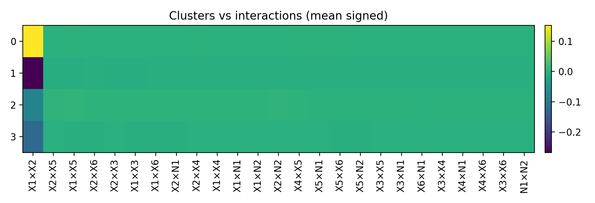

Ce document combine deux volets : (i) un texte explicatif sur la segmentation hiérarchique (clustering, exploration causale globale et locale, blocs de variables type Owen/Winter, indices de coopération/compétition), (ii) l’ensemble des figures permettant d’observer ces phénomènes cluster par cluster.
Le travail s’inscrit dans la perspective d’une segmentation hiérarchique causale à deux dimensions : une dimension verticale (structure des variables en blocs hiérarchiques, futur Winter causal) et une dimension horizontale (segmentation de l’espace des observations en régions locales où le modèle se comporte de manière homogène).
Ces essais sont exploratoires : la taille d’échantillon (3000 points, répartis sur 8 clusters puis sous-clusters) peut être limite pour des estimations causales locales robustes (DAGs, do-calculus). De même, les blocs de variables sont pour l’instant définis de manière raisonnée (spatial/socio-éco/stock/densité), alors qu’un futur travail consistera à découvrir automatiquement la hiérarchie des groupes (par clustering hiérarchique dans l’espace SHAP, enrichi par le DAG causal).
J’ai lu et essayé de m’aligner sur le workflow proposé (SHAP → interactions → parcellisation → tessellation → personas → narration). Le projet actuel couvre essentiellement : (1) le calcul d’indices de Shapley/SHAP (et prémisses Owen/Winter), (2) l’étude des interactions et des blocs, (3) la parcellisation de l’espace des explications (clusters et sous-clusters), en préparant le terrain pour des valeurs de Winter hiérarchiques causales et une narration plus complète.
Clustering des 3000 points sur les valeurs SHAP (ordre 1) : UMAP + HDBSCAN. Chaque cluster correspond à un « type » de contribution des variables au modèle (prix médian des logements).
| Cluster | Effectif | Prix moyen (log) |
|---|---|---|
| 0 | 231 | 3.331 |
| 1 | 511 | 1.796 |
| 2 | 442 | 1.274 |
| 3 | 714 | 1.849 |
| 4 | 346 | 3.473 |
| 5 | 178 | 1.198 |
| 6 | 262 | 1.609 |
| 7 | 316 | 2.633 |


DAG découvert à partir des données (découverte causale), SCM estimé, puis attribution do-Shapley. Clustering des vecteurs do-Shapley (UMAP + HDBSCAN) et visualisations associées.


Pour chaque cluster ordre 1, un seul bloc regroupe : les infos (top features, effectif, prix moyen, arêtes du DAG), le graphe causal local (DAG découvert sur les top-k features du cluster), puis les figures des sous-clusters ordre 2 (heatmap, UMAP, cartes). Tout est regroupé pour faciliter l’interprétation cluster par cluster.



Pas de heatmap ordre 2 pour ce cluster (un seul sous-cluster ou non généré).


Cette section résume, pour chaque cluster ordre 1, l'importance des blocs de variables définis comme
coalitions (Spatial, Socio-éco, Stock/Taille, Densité), à partir des valeurs d'Owen calculées par le
script scripts/run_owen_winter_per_cluster.py. Les valeurs de Winter pourront être ajoutées
ultérieurement en réutilisant la même structure.
Pour chaque cluster, on affiche : (i) un petit tableau avec les valeurs moyennes d'Owen par coalition, (ii) un barplot des coalitions, (iii) un barplot des features (moyenne d'Owen par variable).
Remarque : les figures ci-dessous supposent que le script a été exécuté, ce qui génère les fichiers
figures/owen_winter_california_per_order1_cluster/cluster_k/owen_coalitions_bar.png et
owen_features_bar.png pour chaque cluster k.


Cette section correspond à un pipeline refait « à zéro » sur le dataset California Housing complet (n≈20640), en entraînant un modèle XGBoost, puis en calculant les SHAP interaction values (ordre 2) sur tous les points. Les valeurs d’ordre 1 utilisées ici sont les effets principaux (diagonale de la matrice d’interactions), afin que l’ordre 1 soit sans trace de l’ordre 2.
Pour le clustering, on sélectionne un sous-ensemble de composantes (top‑k main effects + top‑k interactions) selon leur importance RMS (paramétrable), puis on fait UMAP + HDBSCAN comme d’habitude.


Rapport généré pour le projet SHAP clustering – California Housing. Chaque cluster regroupe : graphe causal local + heatmap/UMAP/cartes ordre 2, et, si disponible, les figures Owen par coalition/feature.